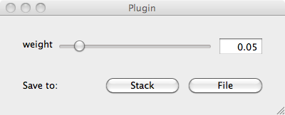
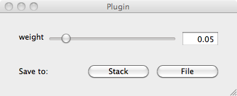

Source
SourceImage Viewer¶
Quick Start¶
skimage.viewer provides a matplotlib-based canvas for displaying images and
a Qt-based GUI-toolkit, with the goal of making it easy to create interactive
image editors. You can simply use it to display an image:
from skimage import data
from skimage.viewer import ImageViewer
image = data.coins()
viewer = ImageViewer(image)
viewer.show()
Of course, you could just as easily use imshow from matplotlib (or
alternatively, skimage.io.imshow which adds support for multiple
io-plugins) to display images. The advantage of ImageViewer is that you can
easily add plugins for manipulating images. Currently, only a few plugins are
implemented, but it is easy to write your own. Before going into the details,
let’s see an example of how a pre-defined plugin is added to the viewer:
from skimage.viewer.plugins.lineprofile import LineProfile
viewer = ImageViewer(image)
viewer += LineProfile(viewer)
overlay, data = viewer.show()[0]
The viewer’s show() method returns a list of tuples, one for each attached
plugin. Each tuple contains two elements: an overlay of the same shape as the
input image, and a data field (which may be None). A plugin class documents
its return value in its output method.
In this example, only one plugin is attached, so the list returned by show
will have length 1. We extract the single tuple and bind its overlay and
data elements to individual variables. Here, overlay contains an image
of the line drawn on the viewer, and data contains the 1-dimensional
intensity profile along that line.
At the moment, there are not many plugins pre-defined, but there is a really
simple interface for creating your own plugin. First, let us create a plugin to
call the total-variation denoising function, denoise_tv_bregman:
from skimage.filters import denoise_tv_bregman
from skimage.viewer.plugins.base import Plugin
denoise_plugin = Plugin(image_filter=denoise_tv_bregman)
Note
The Plugin assumes the first argument given to the image filter is the
image from the image viewer. In the future, this should be changed so you
can pass the image to a different argument of the filter function.
To actually interact with the filter, you have to add widgets that adjust the parameters of the function. Typically, that means adding a slider widget and connecting it to the filter parameter and the minimum and maximum values of the slider:
from skimage.viewer.widgets import Slider
from skimage.viewer.widgets.history import SaveButtons
denoise_plugin += Slider('weight', 0.01, 0.5, update_on='release')
denoise_plugin += SaveButtons()
Here, we connect a slider widget to the filter’s ‘weight’ argument. We also
added some buttons for saving the image to file or to the scikit-image
image stack (see skimage.io.push and skimage.io.pop).
All that’s left is to create an image viewer and add the plugin to that viewer.
viewer = ImageViewer(image)
viewer += denoise_plugin
denoised = viewer.show()[0][0]
Here, we access only the overlay returned by the plugin, which contains the
filtered image for the last used setting of weight.
 
